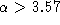

ist noch einfach genug, um eine analytische Lösung mittels Separation der Variablen und elementar bestimmter Integrale zuzulassen. Führen Sie diese durch und diskutieren Sie das Verhalten der Fixpunkte anhand der Lösungen.
Das hier verwendete Integrationsverfahren nach Euler führt bei der Schrittweite 1.0 die logistische DGL (1) in die bekannte logistische Diffenzengleichung
über. Sie ist eine der bekanntesten Gleichungen für Chaos ( 2er Periode, 4er Periode,  chaotisch).
Dieses Beispiel soll die Schwierigkeit bei der Wahl geeigneter Intergrationsschrittweiten beleuchten.
Die Aufgaben mit sind Zusätze für die Leute, denen der Rest zu langweilig ist.
Viel Spaß!
Die WWW-Seiten inklusive des Java-Quelltextes und der übersetzten class-Dateien befinden sich als Archiv in zwei Versionen komplett zum Downloaden auf dem Institutsserver.
Das eine Archiv ist als komprimierte tar-Datei Logist.tar.gz für Unix Betriebssysteme, das andere für Windows 95 in der Datei Logist.zip verfügbar. Der Inhalt der Dateien ist identisch.